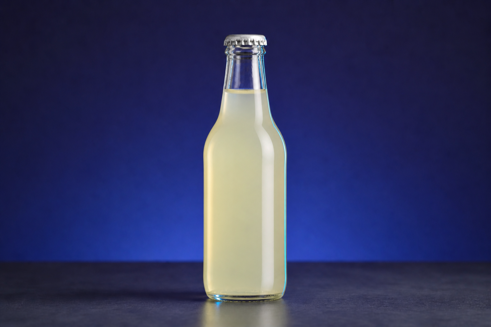
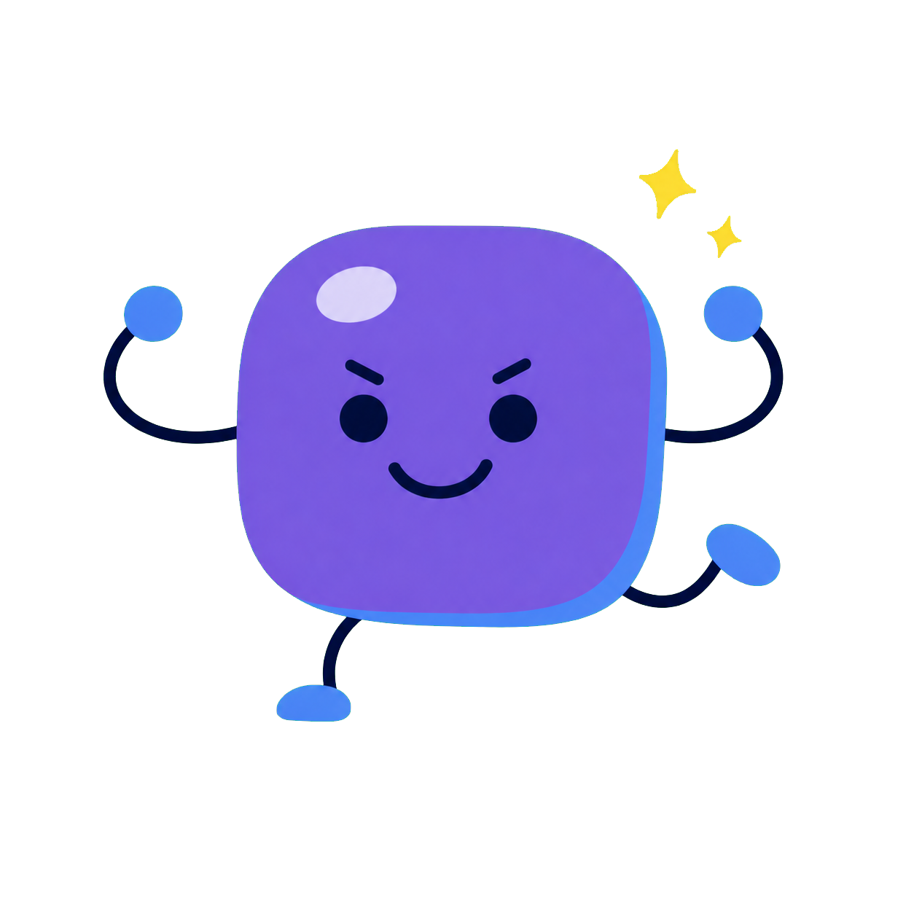

자정의 박물관
유리관의 안개
아무도 전시관을 열지 않았는데 얼음 코어 유리관이 흐려지고 경보가 울렸어요. 박물관 기록을 주의 깊게 읽고, 새로 배운 과학 지식으로 진짜 원인을 밝혀 주세요.
기본 배지로 바로 시작하거나 다른 배지를 골라도 좋아요.
학생의 진행을 확인하고, 작성 중인 보고를 고치거나 짧은 안내를 보낼 수 있습니다.
학생이 수업 화면에서 선택하거나 글을 쓰면 이곳에 자동으로 표시됩니다.
 MIDNIGHT ALERT · 11:51 P.M.
MIDNIGHT ALERT · 11:51 P.M.
아무도 전시관을 열지 않았는데 얼음 코어 유리관이 흐려지고 경보가 울렸어요. 박물관 기록을 주의 깊게 읽고, 새로 배운 과학 지식으로 진짜 원인을 밝혀 주세요.
기본 배지로 바로 시작하거나 다른 배지를 골라도 좋아요.
Read the four records carefully. One detail makes the guard look suspicious, but a suspicious detail is not the same as proof.
“I used my access card, but I never touched the ice-core case.” — Night guard
서로 다른 시점의 기록이 세 구역에 섞여 있어요. 전부 모으기 전에는 사건 순서를 확정하지 마세요.
유리의 온도와 공기의 상태를 바꿔 보며 물방울이 생기는 조건을 찾아보세요.

병의 온도와 주변 공기를 고른 뒤 표면의 변화를 관찰하세요.
시각은 숨겨져 있어요. 문장 속 원인과 결과를 연결해 순서를 정하고, 관계없는 한 조각은 ‘다른 기록’에 놓으세요.
기록의 시각과 과학 지식을 함께 사용하세요.
기록과 결로 실험을 함께 떠올려 보세요.
문장이 정의 → 사건의 조건 → 변화 → 결과 순서로 어떻게 연결되는지 살펴보세요.
읽기 수준을 선택한 뒤 문단 전체를 읽으세요. 언제든 수준을 바꿔 다시 읽을 수 있어요.

CASE CLOSED · KNOWLEDGE UNLOCKED탐정은 기록을 정확히 읽고, 결로 지식을 실제 사건에 적용한 뒤 완성된 정보 문단까지 읽었습니다.